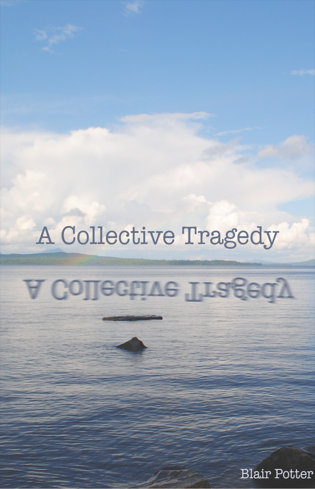
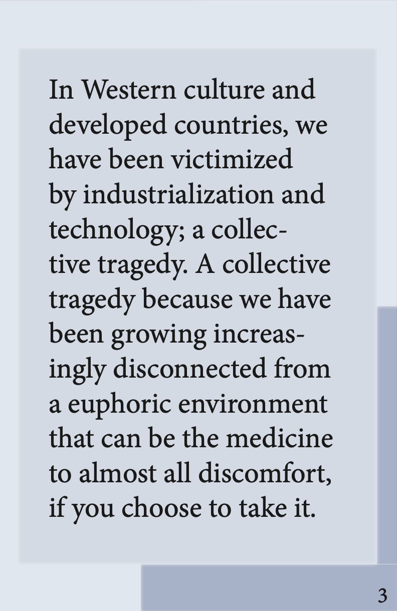
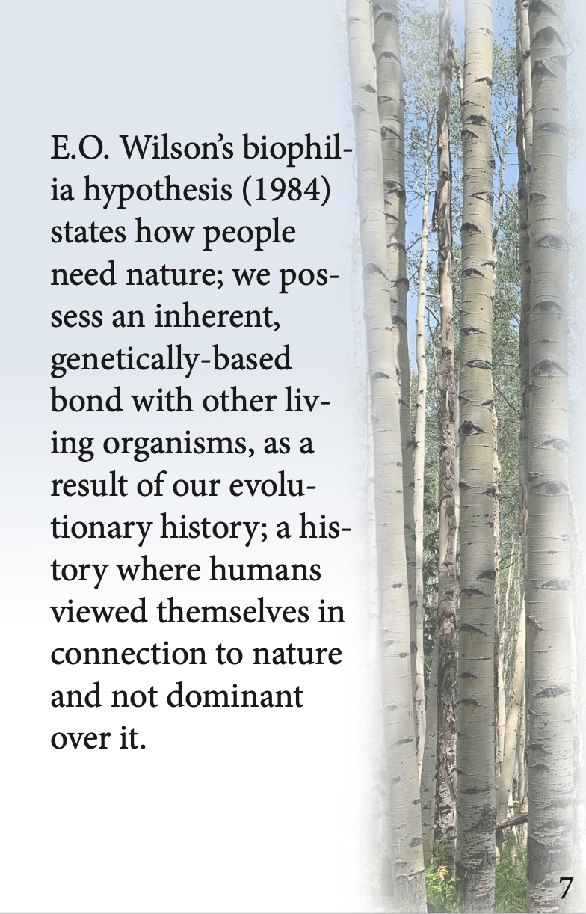

This subpage displays my final booklet project for the Journalism and Design Toolkit class at Eugene Lang College. The assignment instructed us to create a 16-page booklet/zine in InDesign presenting a topic that is either journalism, or at least non-fiction primary-source content. The topic of my zine discusses human connectedness to nature and how it has been diminshing. I have been working on a paper in one of my classes (Writing the Essay III) that addresses this issue.
Click this link to download my zine as a PDF.
  